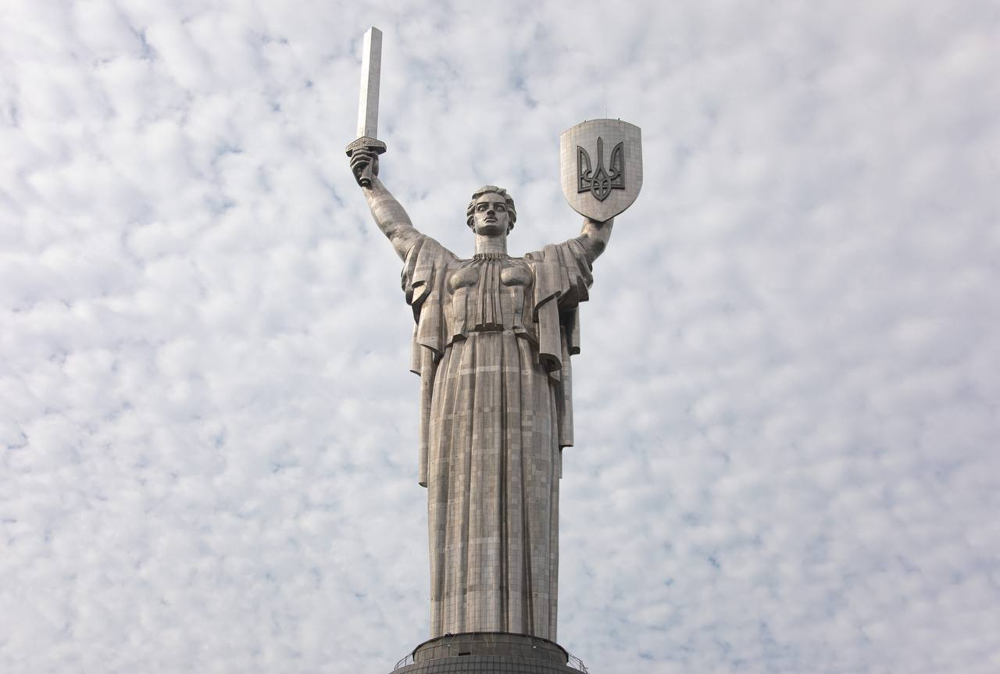
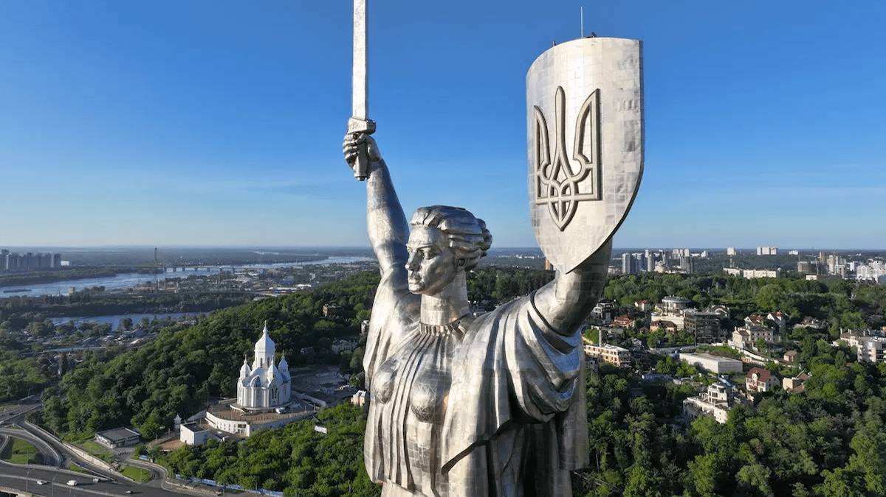
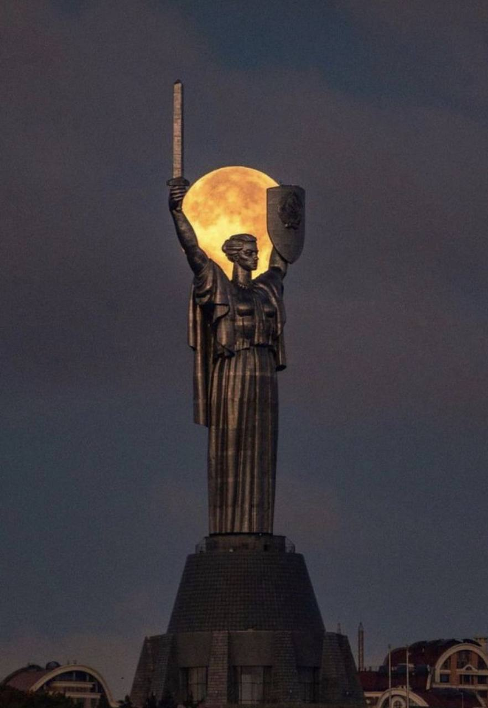

What it is this? Motherland Monument is a famous monument in Kyiv. It was built in 1981 to honor the people who fought in World War II. The statue is made of steel and is one of the tallest monuments in Europe. It holds a sword and a shield, symbolizing strength and courage. Today, it is an important symbol of Ukraine and a popular tourist attraction.
what can you do? You can take amazing photos at the Motherland Monument. You can visit the museum and learn about Ukraine’s history
How you can get there You can get there by metro. Get off at Arsenalna station. Then walk for about 15 minutes to the Motherland Monument


